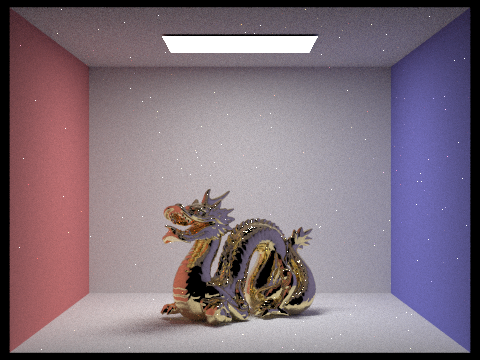

Overview:
In this project, I first implement BSDF for mirror and glass
materials with the knowledge of reflection and refraction.
Second I implement BRDF with microfacet theory to simulate
more realistic surface. Also implement importance sampling microfacet
BRDF. In part 3, I implement importance sampling for environment light
based on the total flux passing through the solid angle. Then I simulate
a thin lens to enable the depth of field effect. Last, I write some
shader programs to render efficiently.
Part 1: Mirror and Glass Materials
-
Different ray depth:
|
depth = 0
|
depth = 1
|
|
depth = 2
|
depth = 3
|
|
depth = 4
|
depth = 5
|
|
depth = 100
|
-
As is shown in images above, rays of 0 depth are the rays emitted form light. Rays of
1 depth are the light reflected by non-delta material since we let spectrum be zero
when dealing with delta bsdf. When the depth is larger than 1, the images become
more and more realistic and less noisy.
Part 2: Microfacet Material
-
Rendering with different alpha:
|

alpha = 0.005
|
alpha = 0.05
|
|
alpha = 0.25
|
 alpha = 0.5
alpha = 0.5
|
-
The larger alpha is, the rough the surface is. When alpha is small, the material
look like metal while the material become diffuse when alpha is large.
-
Uniform and importance sampling:
|
cosine hemisphere
|
importance sampling
|
-
Image rendered with importance sampling is much less noisy. The surface looks more
smooth.
-
Some other material:
-
This material is iron. eta = (2.8851,2.9500, 2.6500), k = (3.0449,2.9300, 2.8075)
Part 3: Environment Map Lights
-
Probability distribution:
|
probability distribution for doge.exr
|
doge.jpg
|
-
Importance sample and uniform sample :
|
uniform sample
|
importance sample
|
|
uniform sample
|
importance sample
|
The images rendered with importance sampling are less noisy than uniform sampling.
Part 4: Depth of Field
-
Different focus distance:
|
focus distance = 1.7
|
focus distance = 2.0
|
|
focus distance = 2.3
|
focus distance = 2.6
|
-
Different aperture sizes:
|
lensRadius = 0.0284
|
lensRadius = 0.0584
|
|
lensRadius = 0.0884
|
lensRadius = 0.1184
|
Part 5: Shader program
link:
gl/index.html
-
Shader program:
Shader program is a type of program used for shading or some other rendering
effects. Shader program describes operations on single vertex or fragment so that it can run
on GPU efficiently. Each fragment runs the same rendering pipeline to generate certain texture.
-
Blinn-Phong:
Blinn-Phong consists of three component: ambient component, diffuse
component and specular component. Ambient component does not depend
on light. Diffuse component is relevant to distance to light and angle
between light and normal. The specular component is :
$$L_s = k_s(I/r^2)max(0, n· h)^p$$
The closer the view direction is to mirror direction, the larger $n·h$ is. So in
Blinn-Phong, color is brighter where view direction closer to mirror direction.
The lager $p$ is, the smaller highlight is.
|
ambient component
|
diffuse component
|
|
specular component
|
entire Blinn-Phong
|
-
My own texture:
-
Bump mapping and displacement mapping:
|
bump mapping
|
displacement mapping
|
The textures look similar. But if you turn the object around, bump mapping
if always a sphere while displacement mapping can observe the bumps of surface.
-
Different number of components
|
$128\times 128$
|
$128\times 128$
|
|
$1024\times 1024$
|
$1024\times 1024$
|
We can observe that the more components, the more details can be shown on the surface.
In the $128\times 128$ image, we can only see the rough texture. Most part of surface
is smooth. But in $1024\times 1024$ images, we can observe even little bumps on the
surface.
-
My shader:
I render a global in my shader. I download a world map as texture map. I use
the color of texture as ambient component. Then I set light as previous tasks.
Also, I sample from texture using vec2(mod(fUv.u+1-time/10000., 1.0), fUv.y)
instead of fUv to simulate earth's rotation from west to east.